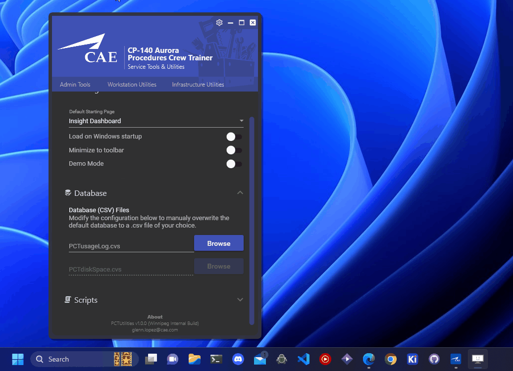
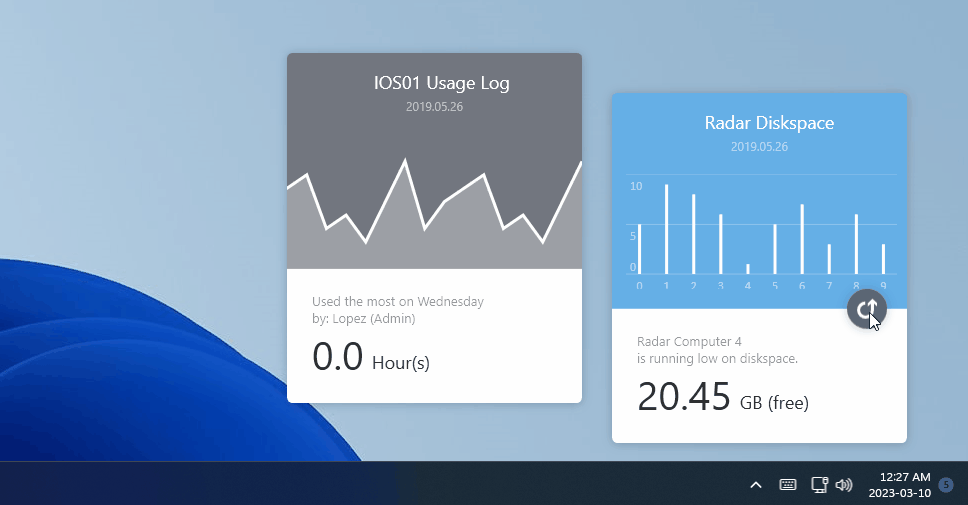
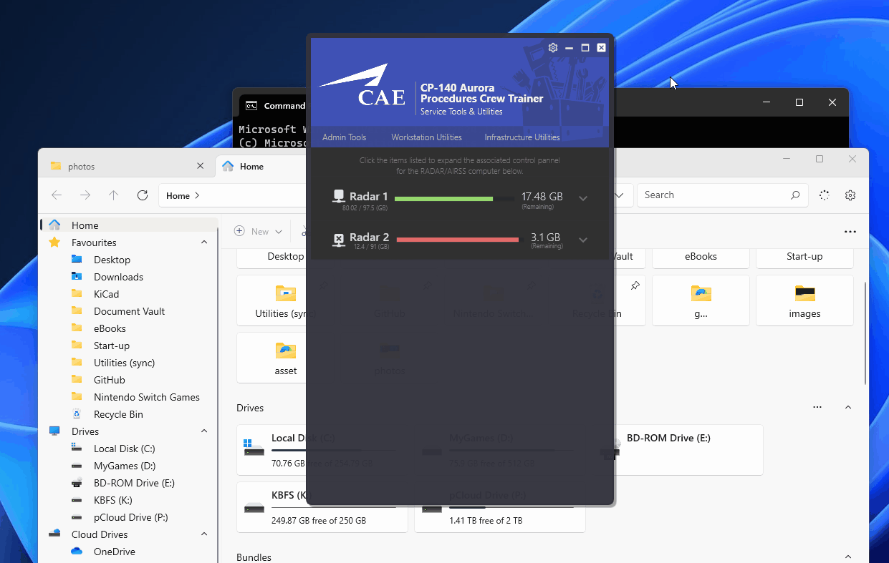

Service Tools & Utility | GUI, C#, WPF, .Net Framework, Utility Suite
Project scope
Develop a software utility suite for CAE's simulator maintenance team, with plug-ins support for purpose driven customization and scope scalability.
I aimed to develop a software suite that could consolidate all the utilities and tools I've crafted for CAE's desktop procedure trainer over the years.
Consolidating these resources can bring many advantages to both the user and developer, including simplified development, improved efficiency, code-reuse,
user convenience, and a consistent user experience.
Additionally, by incorporating a plug-ins system, entire new features can be added in ad-hoc, allowing for flexibility and scope scalability.
Enabling other developers and team members to contribute to an existing framework or spontaneously address new requirements or changing circumstances for the maintenance team.
Features

This software utility suite offers a comprehensive set of tools for easily managing simulator administration resources, workstation resources,
and infrastructure resources, enabling technicians to efficiently diagnose technical snags with ease. With features like system advisory, service manager, simulator statistics,
and backup tools, CAE's simulator technicians can quickly manage and optimize their system performance, reducing time to fix snags, while increasing the
availability and reliability of the simulator by minimizing downtime.
The suite also includes workstation utilities for managing individual resources,
as well as infrastructure utilities for managing broader infrastructure resources.
Widget Support

Widgets allow users to access frequently used features and information directly from their desktop, without having to navigate through the entire program. These desktop widgets enhance the program's accessibility by making it easier for technicians to monitor and control their system resources in real-time. Widget support is crucial for a service utility program as it helps simplify complex tasks, improving preventative and corrective maintenance by offering glance-able information.
UX/GUI Design
%CARD1_DESCRIPTION%



Why this project failed

Despite my best efforts, it became evident that I could not continue to give the project the necessary focus it needed while still fulfilling my other responsibilities. Therefore, I made the difficult decision to prioritize my most significant duties at the training site and had to let go of the project. It was a disappointing outcome, but it was the only reasonable course of action given the circumstances.
What I learned from the project
As such, it was primarily a learning experience for me, an opportunity to acquire new skills and knowledge by building something from scratch.
I envisioned a productive software I wanted to build for my peers. I wanted to create something that made their jobs easier, automated, and less mundane so they can focus on more important tasks, get things done more efficiently, while learning something for my self. Although this project was abandoned, were a lot of things I learned from its failure.

What I learned from its failure
and what I do differently today